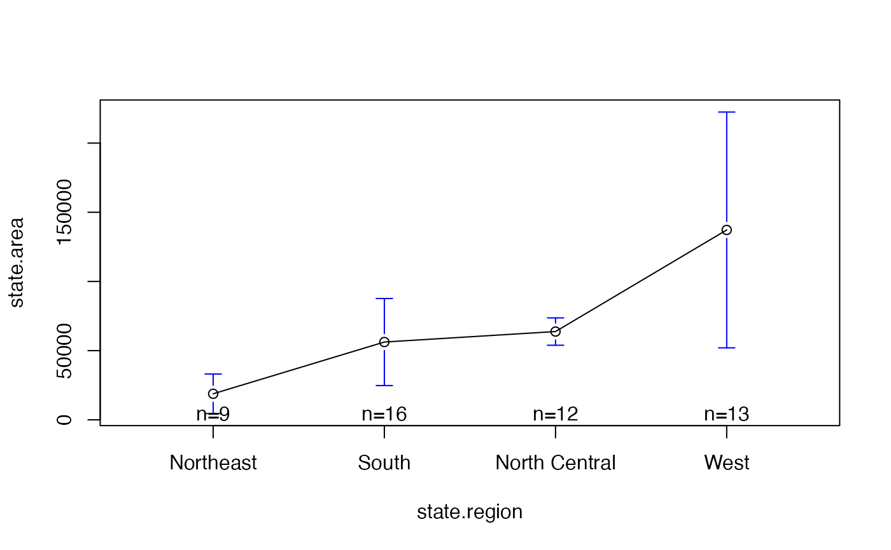
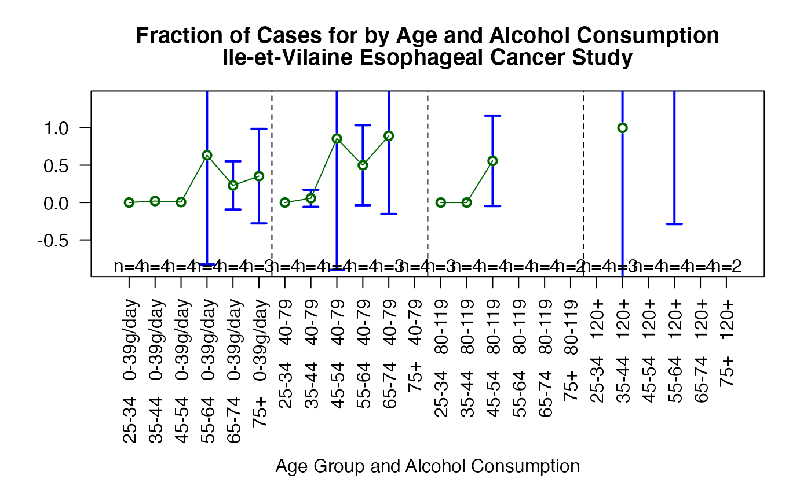

Plot Group Means and Confidence Intervals
plotmeans.RdPlot group means and confidence intervals.
plotmeans(formula, data=NULL, subset, na.action, bars=TRUE, p=0.95, minsd=0, minbar, maxbar, xlab=names(mf)[2], ylab=names(mf)[1], mean.labels=FALSE, ci.label=FALSE, n.label=TRUE, text.n.label="n=", digits=getOption("digits"), col="black", barwidth=1, barcol="blue", connect=TRUE, ccol= col, legends=names(means), xaxt, use.t=TRUE, lwd=par("lwd"), ...)
Arguments
| formula | symbolic expression specifying the outcome (continuous) and grouping variable (factor). See lm() for details. |
|---|---|
| data | optional data frame containing the variables in the model. |
| subset | an optional vector specifying a subset of observations to be used in the fitting process. |
| na.action | a function which indicates what should happen when the data contain `NA's. See lm() for details. |
| bars | a logical value indicating whether confidence interval bars should be plotted. Defaults to TRUE. |
| p | confidence level for error bars. Defaults to 0.95. |
| minsd | minumum permitted value for the standard deviation within
each factor level. Any standard deviation estimates smaller than
|
| minbar | minumum allowed value for bar ends. If specified,
values smaller than |
| maxbar | maximum allowed value for bar ends. If specified,
values larger than |
| xlab | x-axis label. |
| ylab | y-axis label. |
| mean.labels | either a logical value indicating whether the circles representing the group means should be replaced with text giving the actual mean values or a vector containing labels to use instead. Defaults to FALSE. |
| ci.label | a logical value indicating whether text giving the actual interval end values should be placed at the end of each confidence interval bar. Defaults to FALSE. |
| n.label | a logical value indicating whether text giving the number of observations in each group should should be added to the plot. |
| text.n.label | Prefix text for labeling observation counts. Defaults to "n=". |
| digits | number of significant digits to use when displaying mean or confidince limit values. |
| col | color of cicles marking group means. Default is "black". |
| barwidth | linewidth of interval bars and end marks. Default is 1. |
| barcol | color of interval bars and end marks. Default is "blue". |
| connect | either a logical value indicating whether the means of each group should be connected by a line, or a list of vectors giving the index of bars that should be connected by a line. Defaults to TRUE. |
| ccol | color of lines used to connect means. Defaults to the same color as "col". |
| legends | vector containing strings used to label groups along the x axis. Defaults to group names. |
| xaxt | A character which specifies the axis type. Specifying `"n"' causes an axis to be set up, but not plotted. |
| use.t | a logical value indicating whether the t distribution
should be used to compute confidence intervals. If |
| lwd | Width of connecting lines |
| ... | optional plotting parameters. |
See also
Examples
# show some color and mean labels plotmeans(state.area ~ state.region, mean.labels=TRUE, digits=-3, col="red", connect=FALSE)# show how to specify which means should be connected plotmeans(state.area ~ state.region, connect=list(1:2, 3:4), ccol="red", pch=7 )# more complicated example showing how to show an interaction data(esoph) par(las=2, # use perpendicular axis labels mar=c(10.1,4.1,4.1,2.1), # create enough space for long x labels mgp=c(8,1,0) # move x axis legend down to avoid overlap ) plotmeans(ncases/ncontrols ~ interaction(agegp , alcgp, sep =" "), connect=list(1:6,7:12,13:18,19:24), barwidth=2, col="dark green", data=esoph, xlab="Age Group and Alcohol Consumption", ylab="# Cases / # Controls", main=c("Fraction of Cases for by Age and Alcohol Consumption", "Ile-et-Vilaine Esophageal Cancer Study") )#> Warning: zero-length arrow is of indeterminate angle and so skipped#> Warning: zero-length arrow is of indeterminate angle and so skipped#> Warning: zero-length arrow is of indeterminate angle and so skipped#> Warning: zero-length arrow is of indeterminate angle and so skipped#> Warning: zero-length arrow is of indeterminate angle and so skipped#> Warning: zero-length arrow is of indeterminate angle and so skipped#> Warning: zero-length arrow is of indeterminate angle and so skipped#> Warning: zero-length arrow is of indeterminate angle and so skipped#> Warning: zero-length arrow is of indeterminate angle and so skipped#> Warning: zero-length arrow is of indeterminate angle and so skipped#> Warning: zero-length arrow is of indeterminate angle and so skipped#> Warning: zero-length arrow is of indeterminate angle and so skipped#> Warning: zero-length arrow is of indeterminate angle and so skipped#> Warning: zero-length arrow is of indeterminate angle and so skipped